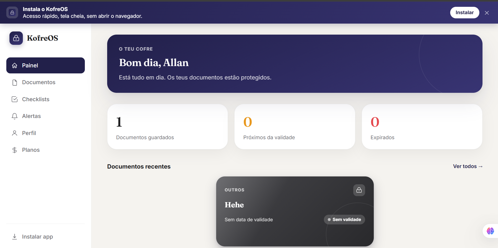
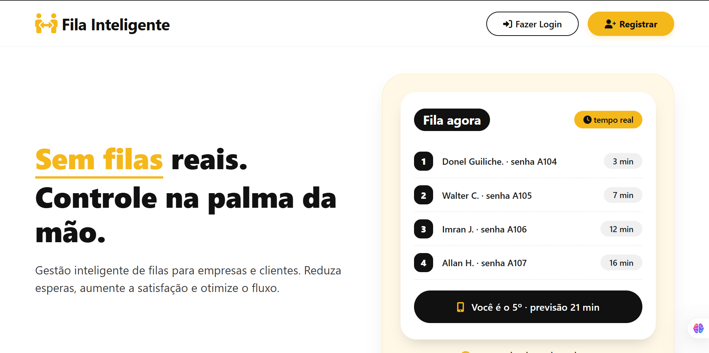
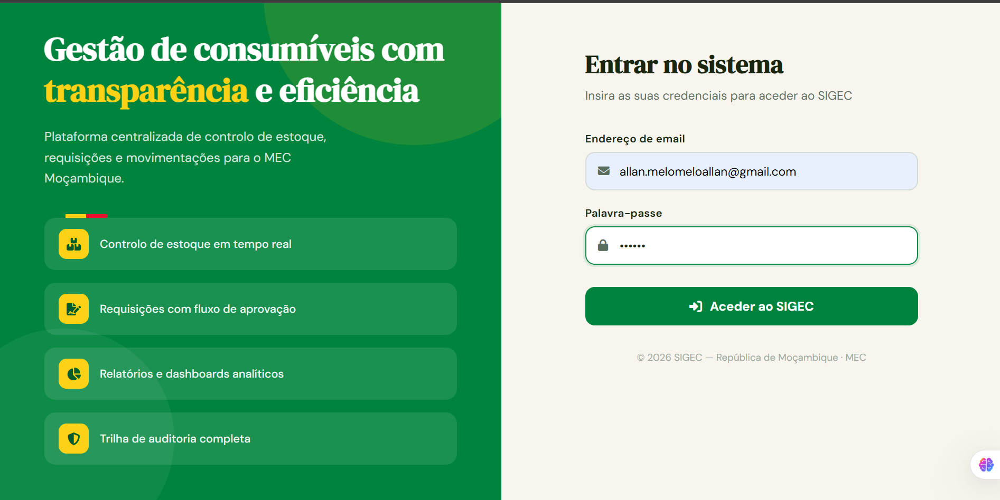

Maputo, Moçambique · Disponível
Transformo ideias em soluções digitais.
Sou Allan Melo — desenvolvedor web e técnico de TI. Crio produtos digitais úteis, interfaces simples e sistemas que resolvem problemas reais.
Desenvolvimento web
Do conceito à funcionalidade, com foco em pessoas e resultados.
Trabalho seleccionado
Projectos com propósito.
Sistemas e ideias que desenvolvi para organizar informação, simplificar tarefas e melhorar experiências digitais.

Fila Segura
Sistema webDesenvolvi um sistema de gestão de filas de atendimento para organizar o fluxo de utentes, facilitar o controlo de senhas e melhorar o acompanhamento do atendimento, com diferentes níveis de acesso para administradores, operadores e utilizadores.
Em desenvolvimento

SIGEC
Sistema de gestãoDesenvolvi um sistema web de gestão de informação e processos administrativos, orientado para centralizar dados, organizar tarefas e controlar o acesso dos utilizadores, contribuindo para uma gestão institucional mais organizada e eficiente.
Projecto institucional
AM.
O lado humano da tecnologia
Curiosidade para aprender, atenção aos detalhes e vontade de transformar problemas em soluções práticas.
Sobre mim
Construo, aprendo
e melhoro sempre.
Sou Allan Marcelino Melo, de Maputo, Moçambique. Concluí a formação CV5 em Técnico de Programação de Aplicações Web, depois de uma base em suporte informático. Tenho interesse especial no desenvolvimento de aplicações web, na criação de produtos digitais e na tecnologia aplicada a necessidades do dia-a-dia.
Gosto de acompanhar um projecto desde a ideia e estrutura da interface até à lógica, à base de dados e aos testes. Procuro escrever soluções claras, aprender com cada desafio e continuar a crescer como profissional.
Formação CV5
Programação de Aplicações Web
Maputo, MZ
Baseado em Moçambique
Full stack web
Interesse principal
Aprendizagem contínua
Prática e projectos próprios
O que trago
Competências.
Uma combinação de desenvolvimento, bases de dados e conhecimentos técnicos para construir e manter soluções.
01 / WEB
Frontend
HTML, CSS, JavaScript e interfaces responsivas.
02 / BACKEND
Backend
PHP, lógica de aplicações e operações CRUD.
03 / DATA
Bases de dados
MySQL, modelação e integração com aplicações.
04 / CODE
Programação
Java e fundamentos de programação.
05 / IT
Suporte informático
Diagnóstico, configuração e resolução de problemas.
06 / DESIGN
UI e design web
Estrutura visual, consistência e usabilidade.
07 / TOOLS
Ferramentas
Git, VS Code, XAMPP e ambiente local.
08 / MINDSET
Resolução de problemas
Análise, autonomia e aprendizagem contínua.
O que ofereço
Serviços.
Trabalho com empresas, instituições e pessoas que precisam de soluções digitais funcionais.
01
Criação de webapps
Desenvolvimento de aplicações web personalizadas, do conceito à publicação.
02
Sistemas de gestão
Sistemas internos para organizar informação, processos e utilizadores.
03
Manutenção e suporte
Actualização, correcção de erros e suporte técnico de sites e aplicações.
04
Bases de dados e integração
Modelação, migração e integração de bases de dados com aplicações web.
Percurso
Formação & prática.
Uma base técnica que combina programação, suporte e experiência prática em contexto de trabalho.
Formação técnica
Técnico de Programação de Aplicações Web — CV5
Formação concluída em 2026, no Instituto de Transportes e Comunicações, com foco no desenvolvimento de aplicações web e na construção de soluções funcionais.
Experiência prática
Estagiário de Desenvolvimento Web e Suporte Informático
Ministério da Educação e Cultura (MEC) — 6 meses. Apoio no desenvolvimento e manutenção de aplicações web, criação de páginas com HTML, CSS, JavaScript e PHP, gestão de bases de dados, operações CRUD, suporte técnico a utilizadores e testes de funcionamento das aplicações.
Base técnica
Suporte informático
Conhecimentos de instalação, configuração, manutenção e resolução de problemas informáticos, complementando o trabalho de programação.
Contacto
Tem um projecto em mente?
Estou aberto a oportunidades, colaboração em projectos e conversas sobre tecnologia e desenvolvimento web.